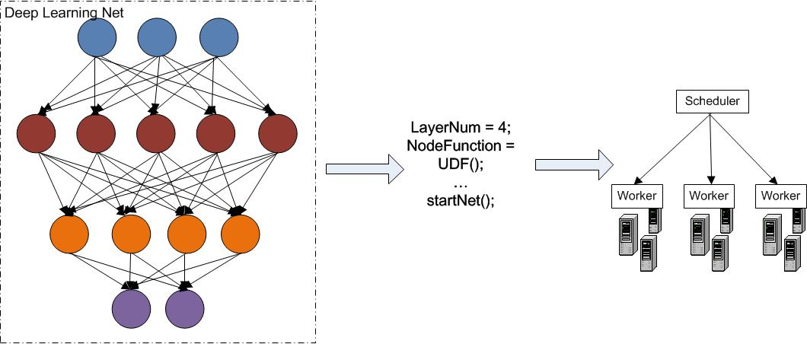

We are developing a cloud-based deep learning testbed, so that deep learning researchers can deploy, test and evaluate their models in a distributed environment with no need to implement low-level system stuffs.
The deep learning system must be able to handle very large number of training instances and model parameters for accuracy. This trend requires researchers not only need to be expertise in learning algorithms, but also on implementing distributed system infrastructure. We are building a testbed for researchers to deploy, train and evaluate their model in a distributed environment automatically.
In machine learning algorithms, the data should be stored in not only the distributed file systems, but also the memory of machines to avoid duplicate IOs on those intermediate results. We are going to develop multiple layer data management strategies, so that it will adjust the location of data (in disk or memory) according to the logic of computation.
Instead of adopting general scheduling scheme, like priority-based, FIFO, etc., we are developing deep learning specific scheduler for better system performance. The distributed tasks within the same layer are vulnerable to stragglers and in turn to block the execution of next layer; pipeline execution across multiple layers can boost performance, but bring the challenges on ensuring the correctness of algorithm.
Low-level system functions, like synchronization, fault-tolerance, should be transparent to users. We provide a high-level model description language which encapsulate common computing process in learning algorithms as well as the details in programming languages.